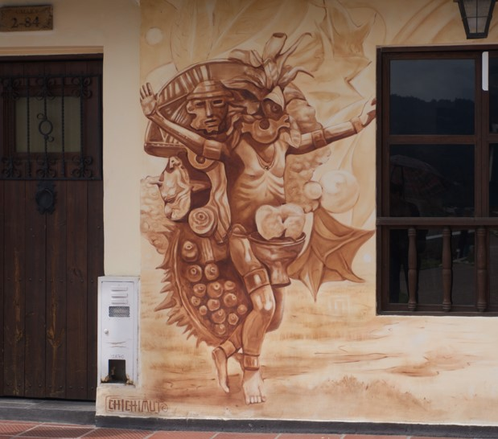

01
Mural uno
Espacio para describir el primer mural: su ubicación, motivo visual, relación con Cuchavira y lectura simbólica dentro del recorrido TAMSA.
Proyecto transmedia · Recorrido virtual
Una experiencia digital dedicada a los murales del evento TAMSA alrededor de Cuchavira: memoria visual, territorio y recorrido reunidos en una sola narrativa.
Mapa del recorrido
Recorrido georreferenciado desde el archivo KML · 30 puntos registrados
Infografía mural

Espacio para describir el primer mural: su ubicación, motivo visual, relación con Cuchavira y lectura simbólica dentro del recorrido TAMSA.
Espacio para presentar el segundo mural, sus elementos gráficos principales y el diálogo que establece con la memoria colectiva del territorio.
Espacio para la información del tercer mural: contexto, composición, autores o comunidad vinculada, y su papel dentro de la experiencia virtual.